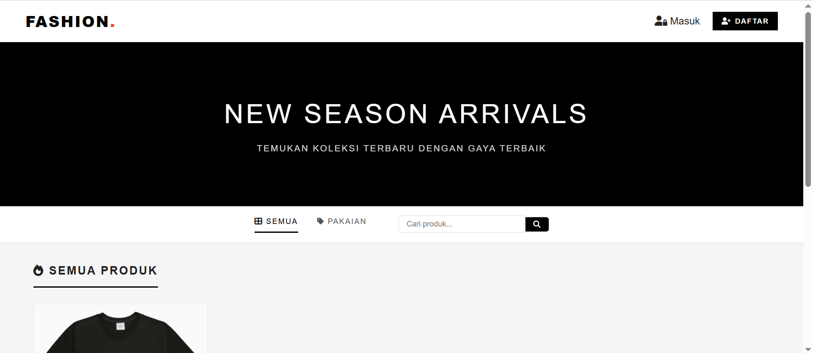
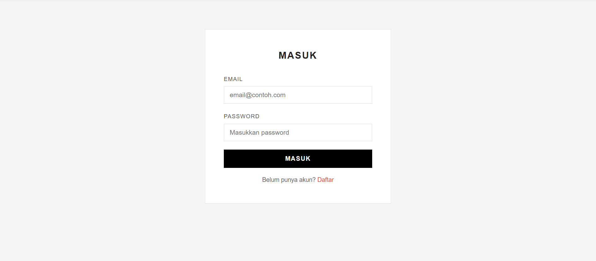
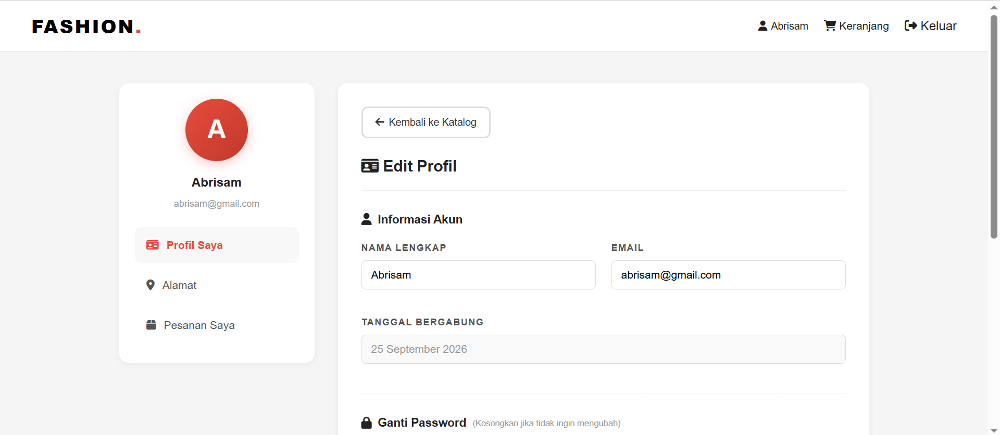

Web Design / Development
Membangun pengalaman digital yang bersih dan fungsional untuk brand modern.

Project Alpha dibuat untuk meningkatkan pemahaman dan pengalaman saya dalam membangun sebuah website yang memiliki sistem terintegrasi serta dapat digunakan sebagai dasar untuk pengembangan aplikasi yang lebih kompleks.
Saya mengembangkan proyek ini sebagai penerapan kemampuan dalam web development dan sistem informasi, mulai dari perancangan tampilan, pengembangan fitur, pembuatan database, hingga implementasi sistem menggunakan HTML, CSS, JavaScript, PHP, dan MySQL.

